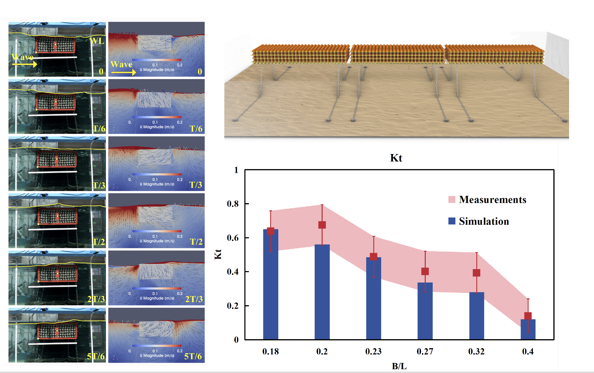

Porous floating breakwater: numerical modeling and design (孔隙漂浮式防波堤的数值模拟与设计
Funding: Startup research grant of Tsinghua University (PI, ¥:3,000,000) 
Porous floating breakwater (PFB), which relies on energy dissipation due to frictional processes, is a promising way to block ocean waves in deep water. Currently, the research on PFB mainly focuses on demonstrating the conceptual design through laboratory experiments, but there is a lack of numerical tools that is critical for bringing these ideas to applications. To close this gap, we extended the existing volume-averaged numerical model for fixed porous body to floating scenarios mainly by using the relative velocity in the porous friction force, and developed a new openFOAM solver. As a demonstration, the developed model was applied to a various new designs of PFB proposed by our group. Through numerical simulations and flume experiments, we investigated the key design considerations of PFB, including cross sectional area, submergence, porosity, size of porous element, etc. We found that the proposed PFB can be 50% smaller than box- or pontoon-type breakwater. Preliminary design and cost estimate show that PFB is economically feasible.
Using artificial reefs as scour protection for offshore-wind monopiles（人工鱼礁防治风电桩基础冲刷的可行性研究）
Funding: China Huaneng Clean Energy Research Institute (PI, ¥:485,000)
Artificial reefs (ARs) are man-made structures deployed on the seabed to create a livable environment for the development of the benthic marine ecosystem. Their presence significantly damps the local flow and therefore can be used for scour protection of offshore wind monopiles. Although this concept appears feasible, the underlying flow-sediment process is very complex and has yet been systematically investigated. In order to fill in the gap, a set of fixed-bed flume experiments were conducted to reveal the hydrodynamic details of typical ARs. In parallel, a set of live-bed tests with the same model setup were conducted to demonstrate the AR’s efficiency in scour protection. High-fidelity numerical simulations of flow over AR array placed around a pile were also conducted to obtain the bottom shear stress, which is a key physical quantity for interpreting scour phenomena. With ARs placed tightly around a monopile, they can greatly reduce the local flows that induce scour, i.e., Ars almost eliminate the downward flow on the upstream side of the monopile and reduces the magnitude and unsteadiness of wake flow velocity by 50∼80%. The ARs can reduce the upstream and downstream scour depth by up to 100%, if edge scour can be reasonably managed. Eventually, optimized layouts of ARs were proposed.
Wave overtopping risk for pedestrians (越浪流对行人的危害研究）
Funding: Risk assessment and mitigation for seawall wave overtopping in the context of climate change (PI, S$ 627,200, Public Utility Board, 2018.4-2021.3)
In urban coastal areas, people can freely access the crest area of coastal protection structurs (e.g. revetment or seawalls) for various recreational activities. Wave overtopping can be a potential threat to these pedestrians. In the context of global climate change, we expect to see rising sea level and harsher wave conditions in Singapore coastal regions, so it is unclear whether the existing seawalls will be sufficiently safe for allowing public accesses in the future. We also need to know how new seawalls can be better designed to achieve a balance between ensuring safety and reducing construction cost.
 Our group studied the allowable wave overtopping conditions regarding people’s safety through quantitative model predictions. Here the risk is defined as people losing balance under flow impact, and the research work is targeted on typical seawalls in Singapore, e.g. with a 1:3 frontal slope. Under this project, we used a numerical model that can precisely simulate the process from wave shoaling to overtopping-human interaction. In addition, physical model tests were conducted using the state-of-the-art facilities at the hydraulic lab of CEE @ NUS. This model enables developing a probabilistic risk-analysis framework for people’s safety under overtopping flows. A risk framework is proposed to quantify the probability of risk occurrence for different people groups (e.g. children) and different locations on the seawall (distance to the seafront edge). With this risk-analysis framework and the projected future sea levels and wave conditions, we can investigate how climate change affects wave overtopping and propose risk mitigation strategies (for instance, new designs of seawall or restricting people’s access during certain wave conditions).
Our group studied the allowable wave overtopping conditions regarding people’s safety through quantitative model predictions. Here the risk is defined as people losing balance under flow impact, and the research work is targeted on typical seawalls in Singapore, e.g. with a 1:3 frontal slope. Under this project, we used a numerical model that can precisely simulate the process from wave shoaling to overtopping-human interaction. In addition, physical model tests were conducted using the state-of-the-art facilities at the hydraulic lab of CEE @ NUS. This model enables developing a probabilistic risk-analysis framework for people’s safety under overtopping flows. A risk framework is proposed to quantify the probability of risk occurrence for different people groups (e.g. children) and different locations on the seawall (distance to the seafront edge). With this risk-analysis framework and the projected future sea levels and wave conditions, we can investigate how climate change affects wave overtopping and propose risk mitigation strategies (for instance, new designs of seawall or restricting people’s access during certain wave conditions).
Hydrodynamics and sediment transport for wave-induced sand ripples （沙纹海床的边界层与输沙机理研究）
Funding:
Wave boundary layer streaming over rippled seabed (PI, ¥:300,000, State Key Research Laboratory of Hydroscience and Hydraulic Engineering, China, 2022.1-2022.12)
Full-scale experimental study of sediment transport by oscillatory flows and currents (PI, S$ 180,000, Singapore-MIT Alliance for Research and Technology, 2015.4-2017.3)
Sand ripples generated by water waves are commonly observed in the coastal area, and their existence complicates the local sediment transport, but very few detailed full-scale experiments on this topic is available in the literature. We used oscillatory water tunnels to conduct a variety of full-scale experiments, and investigated the following:

-
Development and geometry of sand ripples
-
Flow resistance due to sand ripples
-
Net sediment transport rate in the vortex ripple regime
-
Coherent vortex produced by asymmetrical oscillatory flow over vortex ripples
In addition, we also used Direct Numerical Simulation (DNS) and large Eddy Simulations (LES) to reveal the detailed flow process, e.g., turbulence characteristics. The research findings on boundary layer flow and sediment transport are used to develop simple models for predicting ripple- and time-averaged net sediment transport rate.

Coastal turbulent boundary layers （近岸波流耦合边界层）
Funding:
Sediment transport rates in combined wave-current flows (PI, S$ 167,417, Singapore-MIT Alliance for Research and Technology, 2013.9-2015.3)
Turbulent bottom boundary layers under random waves (PI, S$179,900, Ministry of Education, NUS faculty member start-up fund, 2013.10-2016.10)
In the coastal environment, surface waves and currents are always simultaneously present and nonlinearly interact with each other in the near-bottom region, which leads to a wave-current boundary layer. A thorough understanding of this combined wave-current boundary layer is a prerequisite for the prediction of currents, i.e. circulation, as well as sediment transport in coastal waters. We conducted a variety of experiments of turbulent wave-current boundary layer flows using the oscillatory water tunnel at NUS for flow generations and a Particle Image Velocimetry system for velocity measurements. Meanwhile, a semi-analytical model which adopts a rigorous way to account for a time-varying turbulent eddy viscosity is developed to interpolate experimental results. Many interesting features of turbulent wave-current boundary layer is discovered and neatly interpreted by the theoretical model. We manage to show that turbulence asymmetry streaming is an important factor for wave-current interaction, which is not considered in many models we know. We also investigate the effect of wave irregularity on wave-current boundary layer. Through comparative experiments, we confirmed the validity of the assumption of an equivalent regular wave for irregular-wave-current interaction. We also showed that the wave-by-wave approach is mostly valid for studying boundary layers under individual waves.